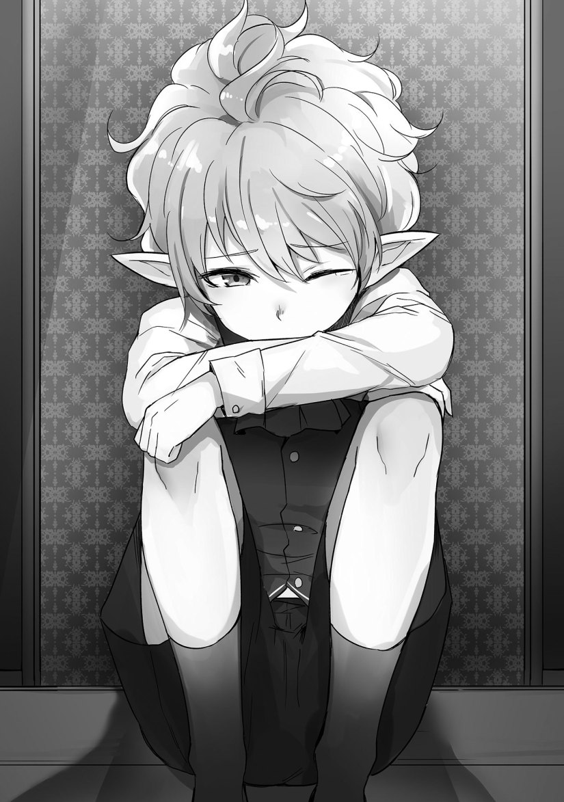

Fate
Partner departed from the elven island.
Inside the airship, I was talking with Luxon while watching the island growing smaller.
[What happened to not getting involved with the matters of other households?]
On the deck, Yumeria was staring at her native land.
She had an indescribable expression while placing an old leather traveling bag next to her.
Perhaps there was some sadness in that expression, or maybe a bit of happiness──it seemed quite complex.
“I couldn’t turn a blind eye to this. What am I supposed to do, tell the elves to stop feeling their instinctive repulsion? That’s impossible. This is the best I can do given the situation.”
[Nevertheless, there were many elves there to see off Yumeria. Interestingly, the female elves were all in approval. The male elves seemed a bit disappointed.]
“I couldn’t even laugh when they said that they didn’t want her to go since it would decrease her worth as a slave.”
[Slave work is an important source of income for the elves, so there’s no helping it.]
“──How unpleasant. Also, it serves those elven jerks right.”
[If that’s how you feel, you can show those elves what it means to have their value as a slave greatly reduced.]
“I’ve gotten my hands on a good trump card. I’ll make sure to put it to good use.”
The elven men of the island didn’t want to part from Yumeria, who gave birth to a half-elf.
Since I said that I was bringing her out of the island, they naturally opposed it.
In the end, I managed to bring her along, but I had to be a little pushy.
The collective chief and elven women helped out as well, but all the elves complied once I invoked the demon lord. It seems that the destruction of the ruins had affected them quite a bit.
I suppose things ended without too much trouble.
Before I knew it, an anxious Yumeria grabbed her bag and approached us.
“U, um, what’s going to happen to me?”
In order to reassure her, I answered her honestly with a softened tone.
“I’m looking for a servant to stay at my household, so I’ll let you work there.”
“B, but, I’m──”
Yumeria, with her low self-esteem, was discouraged about everything, or rather she was a withdrawn individual.
She did quite well as a travelling entertainer considering her personality.
“Humans don’t care about what elves consider beautiful. You know that, right?”
“──In the collective, they called me a dullard or a blockhead. I’m worried about whether I can be helpful.”
I heard that Yumeria’s treatment at the collective was terrible.
It’s sad to think that even elves have a cruel side.
Though, I suppose anyone would realize that after seeing how the elves are in the academy.
“Not to worry. Besides, there are quite a few reasons for──”
Kyle, with an obviously furious face, interrupted the conversation.
“What’s the meaning of this?!”
Kyle, who made a complaint towards me, was violent and enraged.
“Of what?”
“Bringing my mother out of the village. Do you understand the significance of this?”
Yumeria grabbed Kyle’s arm.
“Wait. Kyle, this person is concerned about me and──”
“Zip it! You’re always being deceived like this, aren’t you?! Do you know who this guy is?! He’s the worst heap of trash in the whole academy!”
Kyle’s shouting attracted the gazes of those on the deck.
“Awfully cruel of you to call me that.”
How rude of him to call me a heap of trash. He’s going too far. I don’t think I’m the worst there is.
The worst heap of trash would be──Marie, I think? Not me.
“It’s the truth. If you’re not a trash heap for beating up his Highness in front of the public, then who is?!”
“In that instance, I was evaluated as a good knight who had taught his Highness Julian a lesson. Unfortunately, that doesn’t make me a heap of trash.”
“It does!”
“Kyle, u, um──err.”
Yumeria was bewildered by Kyle’s threatening attitude.
Kyle seemed irritated at Yumeria.
“You always lose your proper judgement and get swindled. It was the same at the collective. You know nothing and go around carelessly, leaving everyone to work you to the bone while you remain penniless!”
Kyle’s outburst of complaints tormented Yumeria, his mother.
“They call you a mixed one, they look down on you and push you around for being a fool. You’re a hopeless cause when you just smile and accept it!”
Yumeria hung her head and teared up.
Unable to watch this any further, I was about ready to stop them until…
“What’s with that attitude?!”
Livia stepped in.
“W, what? This doesn’t concern you. Step back!”
“No, I won’t have any more of this. Why do you speak so rashly towards your mother? Apologize!”
Unlike how she usually was, her voice was loud, making her quite frightening.
Kyle flinched in front of Livia.
“You don’t even know anything. I’m broke because of this person. Do you know why I’m working as a slave at this age? Do you know how I’ve been treated at the collective?! You act so self-important, but you don’t know a thing!”
While weeping, Kyle stormed out of the deck.
He didn’t have his usual feisty attitude, and it was a little scary to wonder if that was actually him.
He was supposed to play the role of a cute, somewhat cheeky character.
When Livia was about to chase after him, Yumeria stopped her.
“P, please wait. It’s my fault. It’s as that child says, it’s my incompetence that led him to suffer.”
Since people around were gazing at us, I led the two to the ship’s interior.
◇
Once we entered a vacant room, Yumeria began to speak.
Her position and treatment within the collective was just as bad as I imagined it to be.
“Mixed ones like me cannot use ordinary magic. Due to that, I couldn’t do work in the village that required magic.”
“The collective chief said that you could a special kind of magic though.”
When Livia said that, Yumeria nodded and demonstrated.
“I can’t do much, but I at least have some redeeming features.”
Seemingly glad, she retrieved a tiny flowerpot from her travelling bag.
She had that in there?
She then took out a pouch, retrieved a seed, and planted it.
As she held up her hand, the seed sprouted and grew into a lively flower.
“──Amazing.”
When I said that, Luxon agreed.
[Given what she can do, I cannot believe that the elven collective would place her in an unfavorable position. Under normal circumstances, this ability would be regarded as essential and they wouldn’t let her leave the collective. It seems that they prioritized their psychological reaction over this useful ability, doesn’t it?]
Luxon expressed its disbelief over the elves and also criticized them.
Perhaps being delighted from the praise, Yumeria’s went red up to her ears.
“I, it’s not that great. It has its limits. Aside from me being a mixed one, I think that the reason for my treatment in the collective also has to do with me giving birth to Kyle, a half-elf.”
It seemed that Livia wasn’t aware of the matters regarding half-elves.
“Why is that bad?”
Yumeria responded in a dispassionate way, though a little hesitant.
“──Mixed ones are hated, but they can live in the collective with their power. However, I went on a journey to know the outside world. Soon after, I trapped in a noble’s residence for a while and suffered through a lot there.”
It seemed that Livia also had an idea of what might have happened there.
I wanted to say something kind to her, but immediately held my tongue.
“When I made a child, I was driven out of the noble’s residence. When I returned to the collective, I was told that if I gave birth to a half-elf, the child’s value as a slave would diminish, and I was met with strong opposition towards giving birth. However, my belly had already grown large, and I wanted to see my child born.”
It was painful to watch Yumeria as she shed tears.
“So that’s what this is about.”
Livia made a face of disbelief while Luxon seemed convinced of something.
[Elves who are at risk of being pregnant would certainly be seen as defective exclusive servants. There’s no helping it if such a thing diminishes their value. However, nobody should know about it if one kept silent.]
Yumeria shook her head.
“While half-elves look the same, there are differences between them and elves. ──That child’s growth speed is the same as that of humans.”
So they would know if someone’s a half-elf by looking at their growth rate?
There’s something I’m curious about then.
“In that case, why was he sold as a slave?”
When I asked that question, Yumeria covered her face and cried.
“There was a slave merchant who liked Kyle. The village chief couldn’t refuse that person’s request.”
Hearing the details, Luxon reworded it in a way that Livia and I could easily grasp.
[So that acquaintance’s request couldn’t be refused. Did that slave merchant happen to know about half-elves?]
Yumeria nodded her head.
“Indeed. That person knew about the circumstances of elves. However, they said they wouldn’t reveal the secret since it would diminish his value and cause trouble. They said that if they kept quiet about it, nobody would notice. In addition, there was a lot going on at the time, and it didn’t seem like we would be able to make it through the winter──so Kyle sold himself without saying anything to me, left the money, and exited the house.”
──Perhaps he was caring for his mother in his own way?
When I was about his age, I had been roaming around carefree.
This world really is cruel.
“I think the reason why that child is hard on me is because he’s irritated about a lot of things. However, he’s a good kid. I don’t receive much from my salary, but he sends home money for me.”
After listening, Livia hung her head and felt ashamed of herself.
“Leon, I didn’t know anything and yet I said such cruel things to Kyle.”
I suppose that I don’t dislike this part of Livia.
“You weren’t wrong, so there’s no problem. ──I’ll talk to him.”
[Oh, planning to interfere again?]
“As Yumeria’s employer, some action should be taken, right?”
[You’re skilled at making excuses for yourself, Master.]
“──You’re being noisy.”
Why am I the one who has to take care of Kyle?
In the first place, shouldn’t this be Marie’s job?
Though, I don’t think she would be able to resolve this kind of issue.
Nothing good will happen if I don’t take action.
Besides──she wouldn’t be good with this parent-child stuff.
I need to solve this issue soon since otherwise, I won’t be able poke fun at Kyle.
◇
I came across a dead end within a narrow passage inside the ship.
When I found Kyle sitting there, hiding himself, I called out to him.

“Hey, brat.”
“──What do you want, worthless knight?”
This little brat is not cute at all.
“I’m here to talk about your mother.”
With the twitch of his pointed ears, Kyle listened silently.
“My family has recently rebuilt their house. It’s gotten bigger, so we need more workers. We will make proper arrangements so that servants living there will be properly accommodated.”
“And why should I take your word for it? It seems that you’ve taken a fancy to my mother’s appearance and now you’re trying to make a move on her. Do you really think I can trust your household?”
Yumeria’s outward appearance is certainly a cut above the rest, so I suppose he can’t help but be concerned about that.
Despite her young appearance, she had the large chest of a parent.
“The apple doesn’t fall far from the tree. My father, a baron, may appear a bit barbaric, but he has a pure heart. He treasures my mother and doesn’t engage in any adultery. ──Probably.”
When I said “probably,” Kyle lifted his face and glared at me, which was a bit frightening.
“I cannot trust you.”
“I’m a man who keeps my word. Besides, I have a reason to keep that person close at hand. ──A trump card against the elves. If they do anything to me, they’ll risk having their secret revealed. It’ll be worthwhile to be with me. I will not do anything harsh to such a valuable and talented individual.”
In all honesty, based on my credibility, there will be few people who would believe me if I did reveal the elves’ secret.
Luxon also said that nobody would believe me and that they would likely think of it as a lie.
However, just having the elves know that I’m aware of their weakness is enough.
Personally, I’m thrilled that I found a way to intimidate the prideful elves.
Kyle was silent.
“If you want to meet up in the future, then stop by to see me. If it’s just you, then I can grant you entrance into our territory. However, you can’t bring Marie.”
I hate that girl. Moreover, if she came to my family’s household, she’ll probably cause some mischief.
Kyle wiped his tears with a sleeve.
“──That person──my mother, is good-natured and easily deceived.”
“Right.”
“She’s timid and has a low self-esteem──but I can’t find it in me to hate her for how kind she is. What a terrible parent.”
It seems that Kyle doesn’t really hate Yumeria.
Kyle stood up, straightened himself, and silently bowed.
He didn’t have his usual cheeky attitude.
“Viscount, please take good care of my mother.”
It seems that he’s worried about his mother, Yumeria, in his own way.
I nodded my head and reassured Kyle.
I then asked something I wanted to know.
This information was established in the game and it was also in Luxon’s pool of information, but Kyle had changed masters many times.
“Now then, there’s one thing I’d like to ask. I heard that beforehand, you had been rapidly switching masters. Could it be that──”
Perhaps not wanting to show his tears, Kyle answered while hiding his eyes.
“I decided to look for a trustworthy master. Even though I was able to find a woman who captivated his Highness the crown prince, it all fell to ruin because of you.”
“Whoops.”
When I gave a half-hearted apology, Kyle glared at me, but──he soon made a face of exasperation and sighed.
“You really are a nasty guy, aren’t you? And here I thought that my livelihood would be smooth sailing.”
Could it be that this guy is quite calculative?
“So, why aren’t you abandoning Marie?”
“I’m tired of finding new masters. Besides, since she’s the saint now, there will be many benefits to being with her. ──That girl may seem bad, but she’s strong.”
Isn’t this supposedly strong Marie neck deep in debt right now though?
It’s not like Kyle doesn’t know about that, so could it be that he’s taken a liking to Marie?
Kyle gave me some advice.
“You should be careful about that principality’s princess. It seems that she’s scheming something.”
“Hertrude?”
She didn’t seem to give up on exacting revenge on the kingdom, so I did suspect that she was planning something.
“I’ve heard many things. I also spoke with the village chief, and I have a hunch that there’s something dangerous about her. Well, knowing you, you’ll be able to manage somehow. You’ll just pull off whatever unfair tactic is necessary.”
“What does that mean?”
“Exactly what it means.”
Did Hertrude talk to Kyle while we were in the ruins?
◇
Sorry about the lateness
Be
Bee
B33
Better late than never.
It’s in the name, so it’s all good.
Nothing beats a chapter releasing more than a week it was expected.
And it looks like every translator is releasing much slower during the summer, Kaoto from HouseOfRain said a chapter would be up in a few days, a few weeks ago. So by comparison, you’re doing great.
Thanks for the translation! There are still two people Leon still uncaptured, right? LOL. Stupid prince and Jilk?(I forgot but whatever)
No Problem, Maastaaahhh!
This translation can become media for run from reality of my life…
Because of that please just continue it, PLEAAASE!!!
Btw, thanks for the chapter!
It’s okay. That’s how it should be. Because it’s 2 slow 2 late, not 2 fast 2 furious
Leon